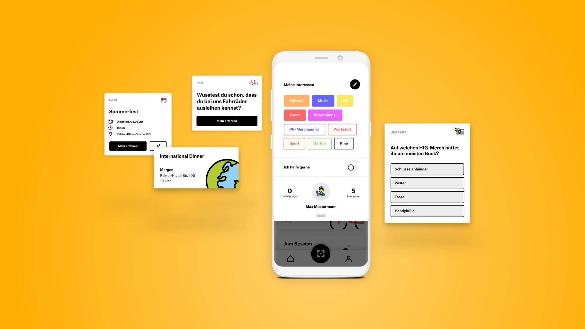
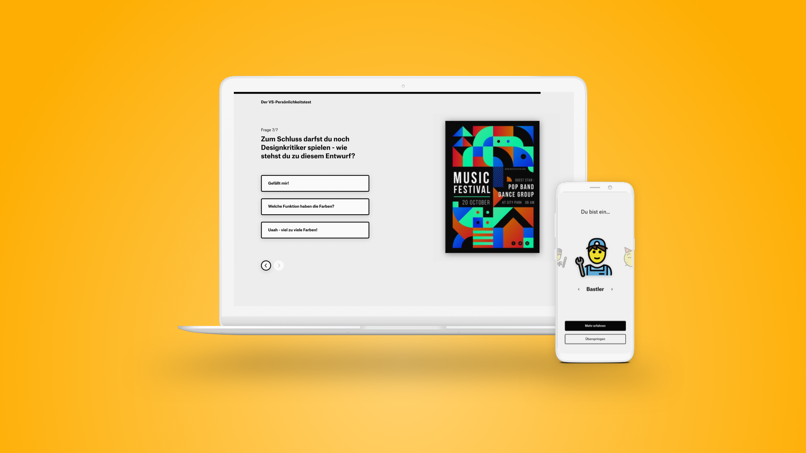
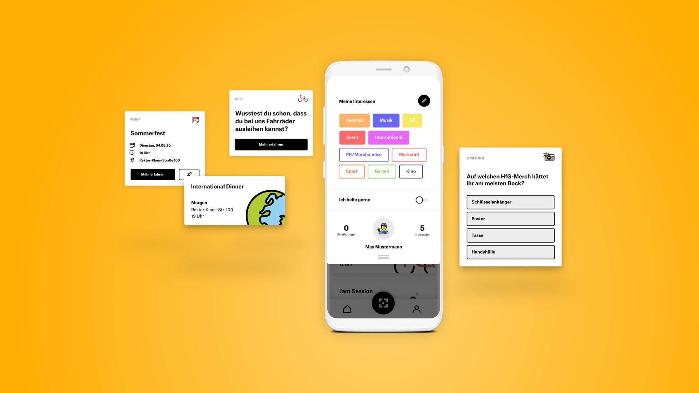
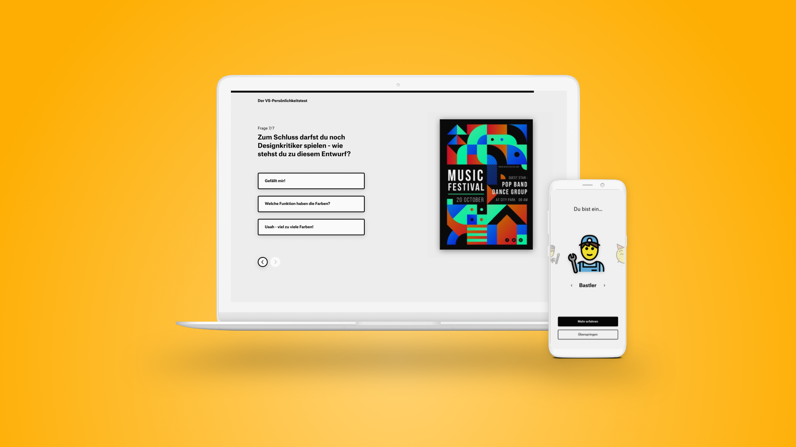

Role
User research,
concept development,
UX and UI design
Towards more effective student participation in university politics
User research,
concept development,
UX and UI design
April to July 2020
(4 months project)
6th semester
Hannes Maurer,
Florian Nagel,
Julien Stoll
Figma,
Notion,
Miro
User research,
concept development,
UX and UI design
April to July 2020
(4 months project)
6th semester
Hannes Maurer,
Florian Nagel,
Julien Stoll
Figma,
Notion,
Miro
In order to represent their interests in university politics, students organize themselves in the "Verfasste Studierendenschaft" (VS). The goal of our project was to create a service concept for the VS that makes it easier and more attractive for students to get involved in university life. In addition, the position of students in university politics should be strengthened.
Research
To better understand current issues facing VS, we conducted interviews with both VS members and non-members. We were able to gain the following insights:
1. Onboarding for new VS members has been poor.
2. There is no medium where all info can be accessed.
3. The terms of office are very short.
1. One-way communication - pure information for students.
2. Current communication is inflexible and there is an oversupply.
3. Contact persons for questions regarding the VS are unknown or missing.
Concept
Our concept targets three groups of people: active VS members, non-members, and first-year students. Three guiding principles address the biggest problems:
1. Structure, standardize processes and make information digitally accessible?
2. Achieve more effective communication between VS and students?
3. Helping first-year students and non-members get started at VS?
Implementation
Based on numerous interviews, we developed a Notion template that structures information and work processes within the VS and makes them digitally accessible. The VS Workspace serves as the basis for all further concept ideas.
A public part of the VS-Notion-Workspace informs about the activities, the dates and about the teams of the VS. Students can use it to get specific information and contact according to their preferences.
A digital bulletin board informs about the activities of the VS, thereby information of the VS motion platform is represented. It will include announcements of dates, calls, photo stories of past events and team presentations. The information is supplemented with QR codes. If the QR codes are scanned, the user gets more information about the respective tile and the possibility to interact with it via the VS app.
The VS+ app opens up a new communication channel between VS and students. The VS communicates with the student via info tiles. These can be filtered according to personal interests. With the help of a QR scanner, the user can add events to a personal collection. It also enables interactions with posters and the digital bulletin board.
The first contact with the VS currently takes place in the form of a long lecture. Experience shows that the first-year students take little away from it. The personality test should be fun and arouse interest - two important prerequisites for motivation and for staying in the memory. Once the test is completed, the app is referred to. With the result from the test, students can learn more about their type and personalize the app. A first contact to the VS is thus established. We used an MVP to check whether students were interested in such a test at all. With 384 participants, we reached more than half of the university students.
 



Outlook
The focus of this project was the feasibility of the concepts developed. From the winter semester 2020, the VS-Notion-Space is to go live as a basis. In this course, it will be tested whether an implementation of the digital bulletin board or the VS+ app is also desired. The students' interest has been aroused and the foundation for a continuation of the project has thus been laid.
©Valerie Grappendorf 2020 Impressum